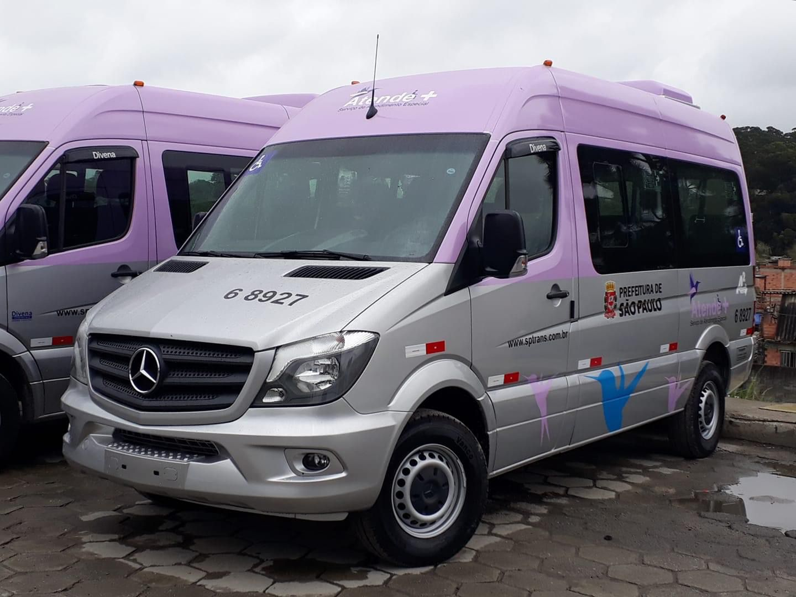

ÔNIBUS
A2 Transportes possui 522 ônibus todos com acessibilidade e seguindo todos os regimentos de sustentabilidade, além de revisados semanalmente para obter uma segurança total aos seus usuários e motoristas.
Atende toda a Zona Sul da cidade de São Paulo.


VANS


Contamos em nossa frota com 38 Vans para o Serviço de Atendimento Especial- Atende+ seguindo o decreto número 36.071 de 09 de maio de 1996 e atualmente é regido pela Lei Municipal número 16.337, de 30 de dezembro de 2015. É uma modalidade de transporte porta a porta, gratuito aos seus usuários com regulamento próprio.
A2, Levando milhares de pessoas para vários destinos com Responsabilidade Social.